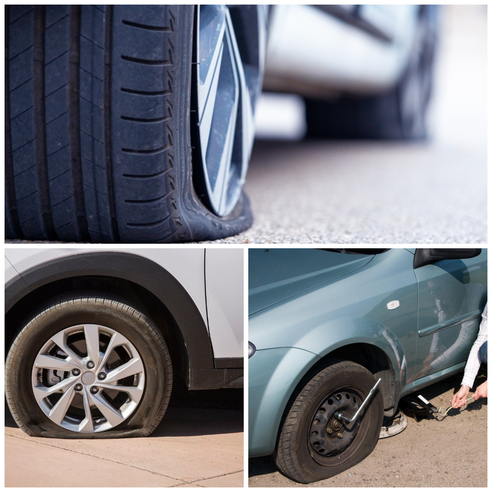
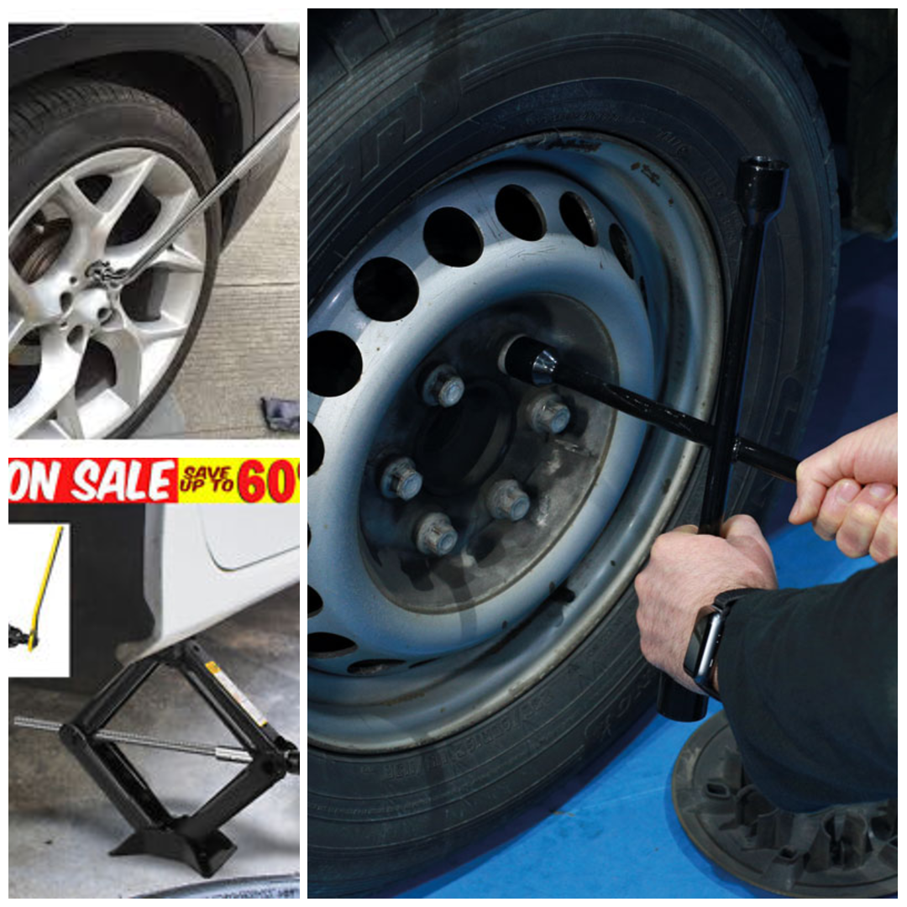
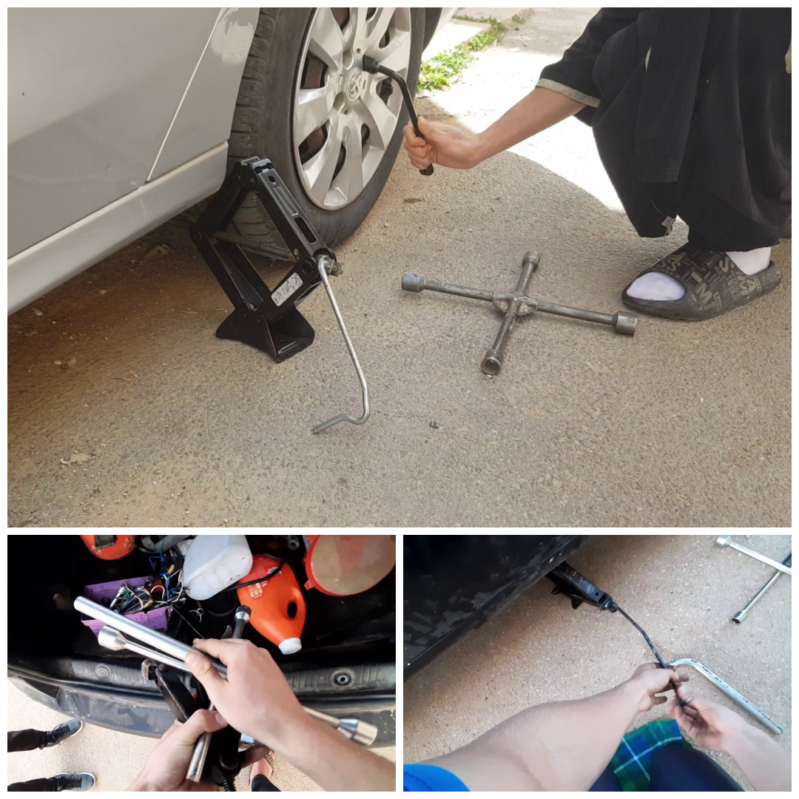
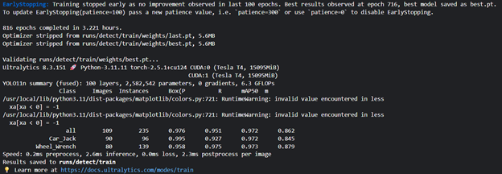
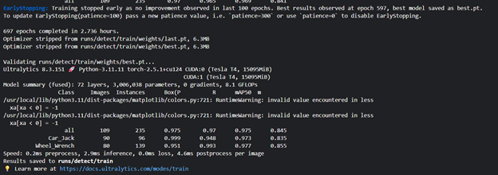

III-Object Detection
In our project, Object Detection represents the foundational stage of a comprehensive, eleven-step guided assistance system. The first two steps of our system rely exclusively on object detection models to assess the situation and ensure the necessary equipment is available.
Specifically, one model is trained to detect the problem state (a “flat tire”), while a second model is trained to identify the required tools (“Car_jack” and “Wheel_wrench”). The successful detection of these tools is the critical prerequisite for initiating the main operational workflow. If the tools are not present, the system cannot proceed to the subsequent phases (Steps 3 through 11), which are handled by an action recognition model detailed later in this report. This chapter details the entire workflow for developing these essential object detection models, from data acquisition and preparation to model selection, training, and evaluation.
3.1 Data Collection
The foundation of any successful machine learning model is a high-quality, comprehensive dataset. For this project, we assembled a custom dataset of images to train our object detection model. The data collection process was twofold, involving both web scraping and manual extraction of frames from videos.
3.1.1 Data Sources
Our dataset comprises a total of 1805 images, categorized into two main classes: “flat tire” and “tools.” The tools class is further subdivided into “Wheel_wrench” and “Car_jack.”
Flat Tire Images: We collected 352 images of flat tires by scraping various search engines, including Google, Bing, and Brave. This approach provided a diverse set of images with different lighting conditions, angles, and backgrounds.
Tool Images: The tool dataset consists of 1453 images. Of these, 605 were obtained through web scraping, and the remaining 848 were created by extracting frames from videos we recorded. This dual-sourcing strategy ensured a rich and varied dataset, capturing the tools in different contexts and orientations.
3.1.2 Data Labeling
All 1805 images were manually labeled using the LabelImg annotation tool. This process involved drawing bounding boxes around each object of interest and assigning the appropriate class label. The distribution of labels is as follows:
Flat_tire (ID: 0): 357 labels
Example of scrapped data of flat tire:
{kind=link}
Car_Jack (ID: 0): 930 labels
Wheel_Wrench (ID: 1): 1759 labels
The higher number of labels for the Wheel_Wrench class is due to the inclusion of two distinct types of wrenches: the 4-way and L-shaped models.
Example of scrapped data of tools:  |
Example of created data of tools:  |
{kind=link}
{kind=link}
3.1.3 Data Augmentation
To enhance the diversity of our dataset and improve the model’s ability to generalize, we applied data augmentation techniques. A portion of the images was converted to grayscale. This helps the model to be less sensitive to color variations and focus more on the shapes and textures of the objects.
3.1.4 Video Frame Extraction
To create a more realistic and varied dataset for the “tools” class, we extracted frames from videos. This was accomplished using a Python script with the OpenCV library. The script reads a video file, and at a set interval of one second, it extracts a frame and saves it as a JPEG image. This method allowed us to generate a large number of unique images from a relatively small number of video files.
import cv2 as cv
import os
# Path to the video file
video_path = 'path/to/your/video.mp4'
cap = cv.VideoCapture(video_path)
# Get frames per second (fps) of the video
fps = cap.get(cv.CAP_PROP_FPS)
interval = 1.0 # Interval in seconds
# Directory to save the extracted frames
output_dir = 'path/to/save/frames'
os.makedirs(output_dir, exist_ok=True)
frame_count = 0
while cap.isOpened():
ret, frame = cap.read()
if not ret:
print("Can't receive frame (stream end?). Exiting ...")
break
current_time = cap.get(cv.CAP_PROP_POS_MSEC) / 1000 # Current time in seconds
# Save a frame every 'interval' seconds
if current_time % interval < (1 / fps):
frame_filename = os.path.join(output_dir, f'frame_{frame_count}.jpg')
cv.imwrite(frame_filename, frame)
frame_count += 1
if cv.waitKey(1) == ord('q'):
break
cap.release()
cv.destroyAllWindows()
print(f"{frame_count} frames saved.")
Example video that was used to extract frames:

3.2 Model Selection and Training
Selecting the right model architecture is a critical trade-off between accuracy and computational efficiency. Our primary goal is to deploy the model on an Android application, which necessitates a lightweight model capable of real-time performance on resource-constrained devices.
3.2.1 Architecture Evaluation: YOLOv11 Variants
We experimented with several versions of the YOLOv11 architecture: Nano (n), Small (s), Medium (m), Large (l), and Extra-Large (x). Our training efforts for the YOLOv11x model were halted prematurely as the Kaggle session crashed due to insufficient GPU memory, highlighting the significant resource demands of larger models.
Our performance testing revealed a clear trend: as the model size increased from ‘n’ to ‘l’, accuracy improved, but at the cost of computational speed. Real-time video processing performance was as follows:
YOLOv11l: 8 FPS
YOLOv11m: 15 FPS
YOLOv11s: 20 FPS
YOLOv11n (Nano): 30 FPS
The YOLOv11n model consistently achieved 30 FPS, and by slightly reducing the camera resolution, we could further boost its performance to a stable 30-40 FPS. Given its superior speed and low computational footprint, YOLOv11n was selected as the optimal architecture for our mobile deployment.
3.2.2 Comparative Analysis: YOLOv11n vs. YOLOv8n
After settling on the “nano” variant, we conducted a comparative analysis between our chosen YOLOv11n and its predecessor, YOLOv8n, to validate our choice. YOLOv11 offers several architectural advancements over YOLOv8, including:
Enhanced Feature Extraction: An improved backbone and neck design for more precise object localization.
Optimized Efficiency: Faster processing speeds while maintaining high accuracy.
Greater Accuracy with Fewer Parameters: YOLOv11 achieves a higher mean Average Precision (mAP) with a more compact model size.
Broad Task Support: Capable of handling a wide range of computer vision tasks beyond simple object detection.
Adaptability: Designed to perform efficiently across diverse environments, from edge devices to cloud GPUs.
The training results for the “tools” model bear out these advantages.
YOLOv11n Training Results:
Layers: 100
Parameters: 2,582,542
mAP50: 0.972
mAP50-95: 0.862
YOLOv8n Training Results:
Layers: 72
Parameters: 3,006,038
mAP50: 0.975
mAP50-95: 0.845
While YOLOv8n has a slightly higher mAP at the 0.50 IoU threshold (0.975 vs 0.972), YOLOv11n achieves a better mAP across all thresholds (0.862 vs 0.845) with nearly half a million fewer parameters. This demonstrates that YOLOv11n is a more efficient and accurate model for this specific task, making it the definitive choice for a project requiring high accuracy with optimized computational performance.
3.2.3 Final Model Strategy
To maximize accuracy and prevent task confusion, we implemented a two-model strategy. Instead of a single, multi-class model, we trained two separate, highly specialized YOLOv11n models:
Flat Tire Detection Model: Exclusively trained on images of flat tires.
Tool Detection Model: Exclusively trained on images of the Car_Jack and Wheel_Wrench.
This separation ensures that the tool detection model does not erroneously identify a flat tire during the tool-gathering phase, and vice-versa. This focused approach leads to a more robust and reliable system, which is paramount for our guided assistance application.